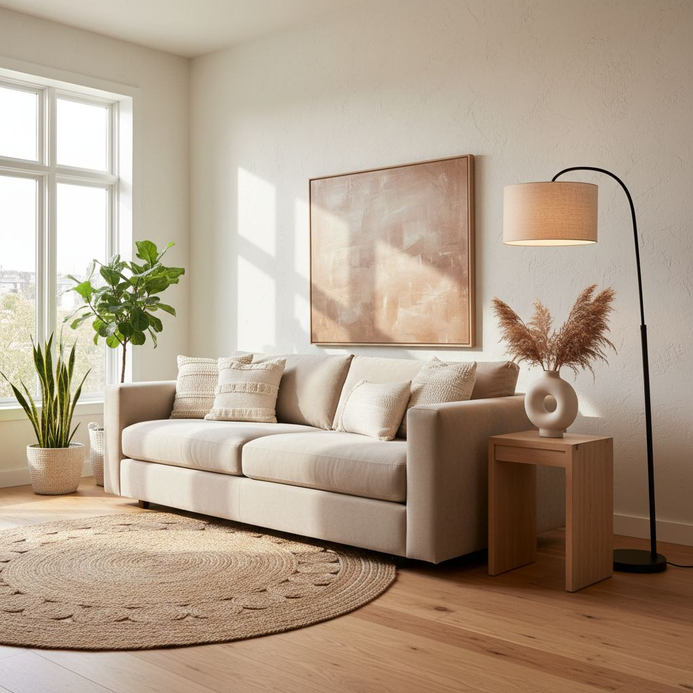

How to Build a Warm Neutral Color Palette for Your Home

A palette is not a single color — it is three or four that work together. For warm-neutral homes, the recipe is anchor + two neutrals + one accent.
Choose your anchor
Start with the largest existing element you cannot change: a wood floor, a countertop, a fireplace. Its undertone (yellow, red, or grey) sets the temperature for everything else.
Layer two more neutrals
Pick a soft off-white (for walls and trim) and a mid-tone warm neutral (for large upholstery). Both should share the anchor's undertone.
Add a saturated accent
One saturated color — deep green, terracotta, navy — repeated in small doses across every room gives the whole palette movement without breaking the calm.

Understanding Undertones: The Unsung Hero
Before you even pick up a paint swatch, a crucial step in building a truly warm neutral palette is to understand the undertones of your existing elements. Many homeowners overlook this, leading to clashes that make a room feel 'off' despite using supposedly neutral colors. Warm neutrals inherently have yellow, red, or orange undertones. Cool neutrals lean towards blue, green, or violet. The trick is to identify the dominant undertone in your fixed elements – flooring, cabinetry, countertops – and choose your neutrals to complement them. For instance, a creamy beige with a strong yellow undertone will sing in a room with oak floors but might fight against a cooler, gray-toned porcelain tile.
Stand back and observe. Does your white trim suddenly look dingy next to a new wall color? That’s likely an undertone mismatch. A common mistake is pairing a beige with a green undertone (like Sherwin-Williams Accessible Beige) with a cream that has a strong yellow undertone (like Benjamin Moore Navajo White). The difference creates an unconscious tension. To prevent this, when considering paint samples, hold them against your permanent fixtures. Look at them in different lights throughout the day, as natural and artificial light can shift how undertones appear. This careful observation will save you from costly repainting and ensure your palette feels cohesive and inviting.
Incorporating Natural Textures for Depth
A warm neutral scheme benefits immensely from a variety of natural textures. Without texture, even the most beautiful neutral colors can fall flat and feel sterile. Think about the layers: the smooth cool touch of polished concrete juxtaposed with a nubby linen sofa, or the raw edge of a reclaimed wood console against a soft, cashmere throw. This isn't just about aesthetics; it's about creating a sensory experience that grounds the space and makes it feel lived-in and comfortable.
Consider materials like jute, sisal, wool, linen, raw wood, ceramic, and even clay. For example, a 5'x8' sisal rug, costing around $200-$400, can anchor a living room, adding organic warmth and a tactile element. A set of three hand-thrown ceramic vases (budget $80-$150) introduces an artisanal touch. Draperies in a natural linen blend, perhaps a light oat or mushroom color, will diffuse light beautifully and add a soft drape, typically costing $150-$300 per panel depending on complexity and fabric quality. Don't shy away from incorporating different 'finishes' within natural materials too; think brushed brass hardware versus a matte black iron, or a lacquered wood versus a natural, unfinished grain. This textural interplay is where a warm neutral home truly comes alive.
Strategic Statement Pieces Beyond Paint
After establishing your core neutrals and layering textures, consider how strategic, well-chosen statement pieces can elevate the entire aesthetic without overwhelming it. These aren't necessarily brightly colored items, but rather pieces that command attention through their form, material, or unique history. This keeps the 'warm neutral' integrity while adding visual interest and personality.
- A substantial piece of furniture: Think a large, live-edge walnut dining table (price range: $1,500 - $5,000 depending on size and craftsmanship) or a generously proportioned, sculptural armchair upholstered in a deep, textured textile like bouclé or velvet (budget: $700 - $2,500).
- Art that speaks volumes: A large-format abstract painting in muted, earthy tones or a striking minimalist photographic print can be a focal point. Look for pieces with interesting brushwork or subjects that intrigue without demanding constant attention (average investment for a significant piece: $500 - $3,000).
- Architectural salvage or vintage finds: A reclaimed wood mantelpiece, a antique carved console table, or a vintage ceramic lamp with a unique silhouette (prices vary wildly, but a good find could be $100 - $800).
The key is intentionality. Each statement piece should feel like it belongs, enhancing the warm neutral backdrop rather than competing with it. One or two impactful pieces per room are often sufficient to create a sense of depth and curated elegance.
Lighting the Mood: Getting Light Right
Lighting is often the most underdeveloped aspect of a home's design, yet it has an unparalleled impact on how a warm neutral palette is perceived. The wrong temperature of light can make even the most intentionally warm colors appear stark, muddy, or washed out. Prioritize layering different types of light, from ambient to task to accent, and pay close attention to color temperature.
For warm neutrals, aim for bulbs with a color temperature between 2700K (warm white) and 3000K (soft white). Anything higher, like 4000K (cool white) or 5000K+ (daylight), will introduce blue tones that can counteract your warm scheme. A common mistake is using only overhead recessed lighting. Supplement with table lamps, floor lamps, and wall sconces. For example, a pair of elegant table lamps with linen shades on a console table, each costing $80-$150, can add soft, inviting pools of light. Consider dimmer switches for overhead lighting – a set of two high-quality dimmers can cost around $50-$70, but offers invaluable control over your room's ambiance. This allows you to adjust the intensity of light throughout the day, creating different moods and showcasing your warm neutral colors in their best light.
Creating a Whole Home Color Flow
When approaching a 'whole home color scheme' with warm neutrals, the goal is effortless transition between spaces, creating a sense of calm and continuity. This doesn't mean every room has to be identical, but rather that there's a discernible connection, like a quiet conversation between rooms. Start by selecting a primary warm neutral for your main living areas and hallways – something like Benjamin Moore's Pale Oak (a greige with a subtle warm undertone) or Sherwin-Williams' Aesthetic White (a warm off-white). This serves as your foundational shade.
From there, vary your secondary neutrals in adjacent rooms. For a dining room off a Pale Oak living room, you might choose a deeper, richer warm neutral like Sherwin-Williams' Eider White (a very light greige) or even a very light beige like Benjamin Moore's Manchester Tan. In a bedroom, you could opt for a slightly more saturated but still warm color, like Farrow & Ball's Skimming Stone or even a muted green with warm undertones to provide a gentle shift without jarring the eye. The trick is to ensure that even when you step into a new room, the colors maintain a consistent underlying warmth. Test your chosen colors by looking from one room into the next, ensuring harmonious progression.
Key takeaways
- Anchor + two neutrals + one accent.
- Match undertones to the largest fixed element.
- One saturated accent, repeated everywhere.
Frequently asked questions
Should trim always be white?
No. Trim in the same color as the wall (or slightly darker) reads as more sophisticated in a warm-neutral home.

Sophia Bennett is a certified interior stylist and the senior editor at Styleire. She has spent more than eight years helping homeowners and renters create warm, functional interiors, with hands-on experience across small city apartments and family homes. Her work has been informed by close collaboration with independent designers, craftspeople, and product testers.
View full profile →Related reading

Small Living Room Layout Ideas That Actually Work
The right layout can make a 12x12 living room feel generous. Here is the exact process a stylist uses to plan one, from focal point to rug size.

Cozy Bedroom Ideas: 12 Changes That Actually Make a Difference
Cozy is a feeling built from small, specific choices. Here are the twelve that make the biggest difference.